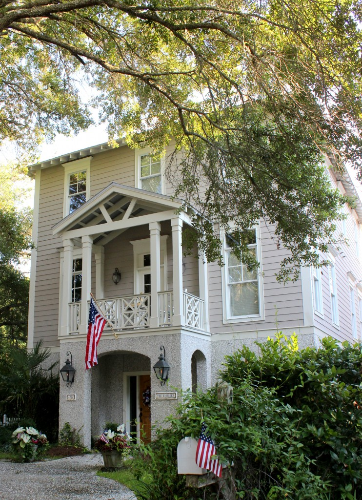
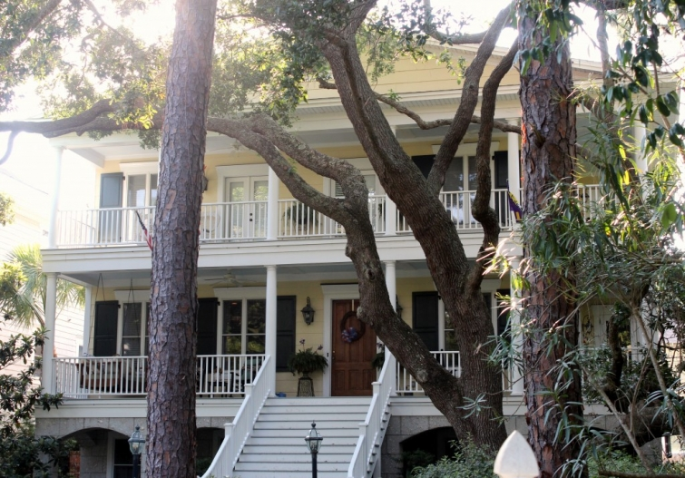

.png)
.PNG)
.PNG)
.PNG)
.PNG)
.PNG)
.JPG)
.JPG)
.PNG)
.PNG)


The next few are actually very large – and not quite as “cottage-y” as I like, but they are pretty nevertheless.
We took a drive late one afternoon to look at some of the houses on the island. These homes are not beachfront homes, but many of them are just one block over from the beach.
Some are older and remodeled while some are new construction. So there is no rhyme or reason to the ones that I am showing you except that I like them. 🙂

I did not get to photograph this next one, but I wanted you to see this adorable rental. It has such a wonderful kitchen and dining area!
Blue seems to be a popular color for decorating on St. Simons, and there were quite a number of homes painted bright blue on the island. I guess that’s only fitting with their close proximity to the ocean.
The most common color scheme I saw was brown with blue, and I really liked the homes that wore that combination. This next one is also available as a vacation rental here. Isn’t it cute??
When we were on the island a year or so ago, I remember them working on this one. So it has recently been remodeled, and it is also available as a vacation rental home. The information is here.
Of all the homes we saw, my favorite was this one – with its clever sailboat cut out shutters. 🙂
And that is all of the homes I photographed in our little drive around the island. Don’t forget that there is a giveaway going on right now for two wonderful autographed books by Barbara Hinske and a $25 gift card.
The giveaway is open to U.S. residents only until Thursday, August 14, 2014. It will close at midnight Eastern Time on the 14th. The winner will be announced/notified on Sunday, August 17, 2014. To enter, just leave a comment on any of the St. Simons Island posts that publish between 8/7/14 and 8/14/14. You may enter on any or all of the posts, but you may only enter once per post please. Good luck! We are off to move our daughter back to college tomorrow, so wish us good luck as well. 🙂
Until next time…


.PNG)
Please sign me up this is Wonderful Kathleen Rivers and I raised our girls together in Columbus Ga.
Thanks, Kelly, for another wonderful virtual tour.
My dream white kitchen! Beautiful houses!
Kelly, thanks for the great pictures and info about St. Simons Island. I’m thinking it might make for a great holiday destination for our family. Some of us live here in NC and some live in Florida. St. Simons looks about in the middle. Thanks for yet another great series of posts!!
I so love the homes on St. Simons Island…we have friends who live on the island with a gorgeous view of the marsh…I swoon every time I drive down the roads of St. Simons looking at all of the gorgeous homes both large and small….
Kelly,
I like the more cottage style homes but I confess, some of these larger homes are beautiful. I love the architecture most of them share and wouldn’t a 3-story house be great for storage and plenty of bedrooms!
Enjoy your weekend and thank you so much for listing me as a “blog friend” on your blog roll. I’m honored. 🙂
xo,
Karen
I have completely enjoyed this pretty tour of St. Simons…..so glad to know that I am not the only one who takes pictures of houses on vacation (whew!). These homes are just lovely and I think I would move right in to the last home pictured….I adore the outside!!!! Thanks so much for the lovely tour. St. Simons is now on my must visit list!!!!!
A wonderful home town feel is what I get from this post! Reminds me of my childhood, those carefree days we no longer seem to have. Living in proximity to the protests going on here, it was nice to see a peaceful scene instead of the negativity on our local situation. What the world is seeing of us is a VERY small part in an isolated area, and I for one hate what it is doing to our image. I feel horrified at what caused it and hope justice is done.
Thank you for these images!
Kelly, that first home is quite a compound. I could set up camp for the whole summer in just the guest house. Pool, beach and bike rides to investigate the island. 🙂 I especially like the house that you said you saw before on a previous trip. I checked out the link and love the decorator sketches. Oh so pretty! Thank you Kelly for a beautiful Friday morning wake up. I, like many here, love your blog and appreciate your shares. Hope you have a nice weekend.
Debra
some more pretty houses, thanks Kelly. I love the wide entrance steps on house #3 and I love the combination of brown and blue, I have used it.
Hi Kelly,
The interior of the rental unit has the look that I would love to have in my own home – so calming and beautiful. Thanks for sharing!
Megan
I’ve loved your posts about St.Simons Island. A vacation there would be wonderful! My favorites are the blue & white cottages.
Hi Kelly,
Like you, these family homes are my favorite. They just exude charm! I could happily move into any one of these houses.
Thanks for the opportunity to win these books. Take care!
I had never considered a brown and blue combination for a home’s exterior!
I really like it. Thank you for introducing us to so many different places to visit in the South. While I have been to some of them, you found interesting sights there I totally missed. I would love to win the Amazon gift card since I love to read.
All the homes are lovely, but as for me the first home captured my attention. I guess it’s because I like symmetry. Of course it’s also painted in traditional white w/black shutters. Yet I could live in any or all. Thanks for the show, Kelly.
These homes are all so lovely! What a wonderful way to enjoy these summer days! I really like the picket fences, lovely plants and the shutters. You can almost feel the warm breezes and salt air. I visited Merritt Island yesterday and got to tour a wonderful FL retired couple’s home– makes one wish we could all live near the coast and be on the beach in a snap!!
Kelly,
Loved all the homes posted on today’s blog but especially liked the first one which reminded me of “The Father of the Bride” house and the one with the sailboat cut out shutters. Will have to include St. Simons island along with Tybee as definite places to visit. Take care, Lindy
Thank you for the posts on this island. I had never heard of it before but now it’s on the list of places I want to go. I love seeing all the different type of houses but the ones in this post are my favorite.
Kelly, There is not one house that I would Not want to visit.
Some of these remind me of my Grandmother’s home on the lake in Michigan. Especially the brown one with white trim. All of them though, so inviting. Again, your photos just pull us in.
Thanks again for helping us to armchair travel. Blessings to you and your family.
The cottage style is popular here too, along the Alabama Gulf Coast, so I can see any of these homes being right here with me! Porches and detail trim like the sailboat shutters are so important to bring a personalized look to your home.
You chose some great houses to photograph and share.
Thanks for the series on St. Simons, and have fun at school next week!
Kelly,
I wouldn’t have thought I’d like the brown and blue until I saw your photos. It’s really cute. Thanks for sharing them with us!
Oh what sweet dreams I will have after seeing all of these beautiful houses! I just love how you always visit places with oh so pretty houses!!!! Thanks for always taking us along for the ride.
Kelly,
I like the brown with blue combination also. All of the homes are charming. Love your post.
Sharon
I would love to be entered in the drawing. We visited St. Simons a couple years ago when our daughter was in school nearby. A lovely place. Would love to return again some day and rent one of these beautiful homes. Thanks so much for sharing. Blessings…..
How fun to see all these beachy places. We need to check out St. Simon’s island.
I love these houses! The white trim on them looks so crisp and clean and the picket fences on most of them add to the charm.
Kelly,
Really enjoyed all the posts on St. Simmons Island! How fun would it be to design and decorate one of these beach houses! Love all the cottage details and woodwork too. Thanks for sharing your vacation with us!
I could walk a little way to get to the beach if I were staying in any of these pretty houses. The first one reminds me of Father of the Bride….but everything is reminding me of Father of the Bride.
I have enjoyed your posts on St. Simons Island. It’s always interesting to see a place through the eyes of another.
I absolutely love the white home with black shutters!
I have thoroughly enjoyed reading all the posts on St. Simons Island. Looking forward to being there next weekend to celebrate my Mom’s 85th birthday! I love that place!
Love the houses!
I just love all of these houses! Excellent pictures Kelly! And, thank you for the giveaway! I would like some good reads.